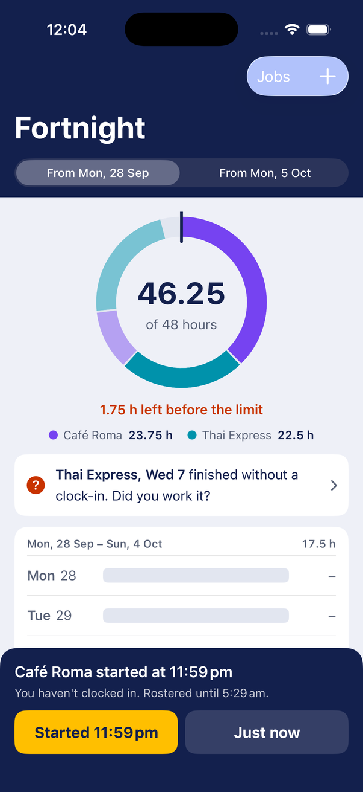
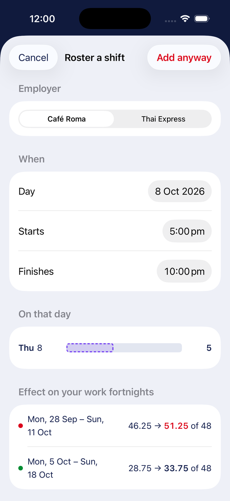
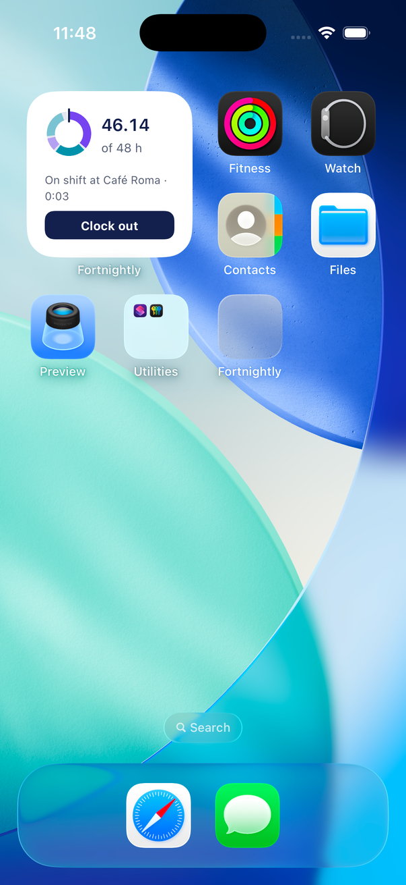
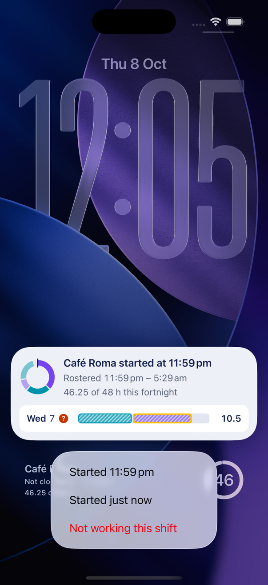
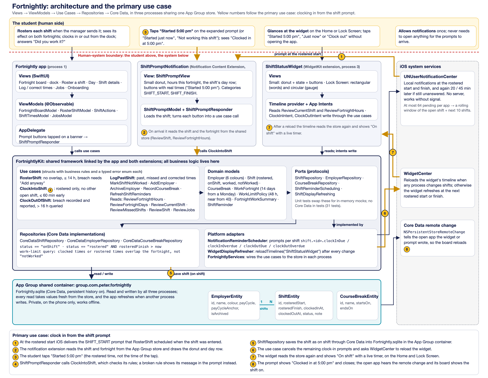

Staying within the student visa work limit, with a record of hours that belongs to the student.
References follow Section 4.
An international student on a Student visa (subclass 500) can "work up to 48 hours a fortnight when your course of study or training is in session" (Department of Home Affairs, 2026). This is visa condition 8105: subclause (1) sets 40 hours and subclause (2A) raises it to 48 hours for subclass 500, and the law defines a fortnight as "the period of 14 days commencing on a Monday" (Migration Regulations 1994, Sch 8, condition 8105(3)). Because every Monday starts a new fortnight, fortnights overlap and every week belongs to two of them. Home Affairs' own worked example shows the trap: a student who worked 15, 30, 30 and 10 hours in four weeks stayed within the limit in weeks 1 and 2 (45 hours) and in weeks 3 and 4 (40 hours), but "may be in breach of their work conditions, in the fortnight comprising the 14 days of weeks 2 and 3 (60 hours worked)" (Department of Home Affairs, 2024).
Hospitality students rarely work a fixed pattern. They do late closes and early openings, they are offered extra shifts at short notice, and they often work for two employers. Each employer sees only its own hours, and pay cycles (weekly or fortnightly, starting on any day) do not line up with the overlapping visa fortnights. So two things go wrong:
The two problems feed each other. Almost two-thirds of international students did not seek information or help for problems at work, "often because of visa concerns or fear of job loss", and as one of the report's authors warns, "there's nothing to stop the labour regulator sharing information with immigration authorities if a student has worked more hours than her visa allows" (Farbenblum & Berg, 2020). A student who is not sure whether they went over their hours has a reason to stay quiet. Staying within the limit and keeping an accurate record of their own is what makes it safe to ask to be paid properly.
An international student on a subclass 500 visa, studying full-time in Sydney, working two to four casual hospitality shifts a week for one or two employers (for example a café on weekday mornings and a restaurant on Friday and Saturday nights), whose rosters arrive weekly by text message or a rostering app, and who uses their phone in short moments around work: arriving, on a break, after a late close.
The record has to be made at work, at the moment a shift starts or ends: 6am at a café, 1am after a restaurant close. The phone is the only device the student has with them at those moments, so the solution has to live on it and reach the student without being opened.




Notification Content Extension: the prompt at the start and end of every shift. When Café Roma's shift starts at 5:00pm, the student is tying an apron, not opening an app. At the rostered start a prompt arrives with three buttons: "Started 5:00 pm", "Started just now" and "Not working this shift". At the rostered finish it offers "Finished 10:30 pm", "Finished just now" and "Still working". The custom view replaces the default notification with what a plain notification cannot show: the fortnight's donut, the hours so far, and the day's shifts. The buttons run the same use cases as the app, in the background, so the student clocks in without unlocking the app. If this extension were removed, clocking in would depend on remembering to open an app at the start of every shift, which is the exact failure the app exists to fix.
WidgetKit widget: the reminder that doesn't get buried. Notifications are easy to swipe away during a rush. The widget keeps showing the true state every time the student glances at their phone: the next shift, "Not clocked in" once a shift has started, "On shift" with a live timer, or "Still clocked in" after the rostered finish. It has two clock-in buttons, "Started 5:00 pm" and "Just now", because a student who missed the prompt is the one most likely to tap late, and recording the tap time would quietly under-record their hours. On the Lock Screen, the rectangular widget names the state in words and the circular widget shows the fortnight's hours as a gauge, without unlocking. The student would notice its removal the first time a forgotten clock-in went unnoticed until the next day.
Alternatives considered. I first paired the app with a widget that only showed "31 / 48 hrs" and a Share Extension for payslips. Applying the question "would the student notice if it were removed?", a number they could see by opening the app barely passed, and payslip parsing failed on varied formats, photos without text, and the finding that the most underpaid workers often receive fraudulent payslips or none. An Action Extension to check a shift offer inside a chat fitted the moment of decision well, but chat text such as "Sat 5-11" is messy to parse and share-sheet support inside messaging apps is unreliable, so the warning moved into the roster screen instead.
I chose Core Data, with the store in the App Group container group.com.peter.fortnightly so the app, the widget and the notification extension read and write the same records.
The trade-off is that losing the phone loses the record. I accepted it for privacy; an export is the natural next step.

I chose this problem because it has a rule precise enough to test and a stakeholder I recognise among my classmates. What convinced me it was worth solving was the legal definition: a fortnight is any 14 days starting on a Monday. I had assumed the limit worked like a pay period. Once I saw that every week belongs to two fortnights, I understood why students lose track, and the overlap became the first unit test I chose. My understanding changed again while reading the research. I started by treating this as a visa problem, but Farbenblum and Berg found that almost two-thirds of international students didn't seek help for problems at work, often because of visa concerns, which showed me that the visa limit and wage theft are one problem. That is why the app keeps the student's own clock times, not only a total. I did not manage to interview students before the deadline, so my evidence is published research and the law itself; interviews are the first thing I would add.
The notification extension serves the moment a shift starts or ends, when the student's attention is on work. The widget serves every moment in between, keeping an unanswered clock-in visible until it is fixed. The student would notice if either disappeared: without the prompt, recording depends on memory; without the widget, a swiped-away prompt means a lost record. This was not my first design. My first pairing included a widget that only showed hours worked, and when I tested it against "would they notice if it were removed?", it barely passed. Rethinking the widget as a status display with buttons gave it a real job. Because extensions that crash or show "No data" earn nothing, I built a spike first that proved the widget and the notification extension could read the shared store. At the end I proved both extensions end to end in the Simulator: tapping "Just now" on the widget clocked a shift in, and tapping "Started 11:48 pm" in the prompt saved the clock-in and updated the Lock Screen widget straight away.
I chose Core Data because the data is private, must work offline, and must be read quickly by two extensions; nothing needs to sync. The most significant schema decision was to keep the rostered times and the actual times on the same Shift entity, with a status of rostered, on shift, worked or not worked, instead of separate roster and time-record entities. This lets a single query answer "which shifts count toward this fortnight?" (actual times once clocked in, rostered times until then), lets the app list a shift that finished without a clock-in, and keeps "rostered 9 to 3, worked 9 to 3:15" side by side for payslip checks. A second decision protects the record: an employer with shifts cannot be deleted (the delete rule is Deny), only archived, so the hours worked there keep counting.
The clearest conflict was between a clean use case and an honest experience. RosterShift enforces the 48-hour rule, and the simplest design would refuse a breaching shift. But the record must match reality: if the manager insists, the shift happens. I resolved it by making the use case throw a breach error unless the student acknowledges it, and by making the acknowledgement the interface itself: the warning appears as the shift is typed, and the button changes from "Add" to "Add anyway" in red. A widget button raised a similar conflict, because it cannot ask a question or show an error. Instead of recording the tap time, I gave the widget two clock-in buttons and show only the buttons valid for the current state. Late in the build, the platform pushed back too: iOS 26 kept the navigation title dark on my navy bar, and values cached in the app went out of date when the widget wrote from another process, so every repository read now takes fresh values from the store.
I used Claude as a coding assistant throughout, and kept a dated log of each request in my decision log. It drafted plans, explained Core Data and extensions, built HTML prototypes, wrote code and ran builds. What worked best was making it propose candidate tests, each naming the bug it would catch, and choosing them myself: 31 tests, written failing first. What did not work was trusting its claims without checking. It once claimed every test proved that fortnights start on Monday; a mutation check showed only one did. Its first extension idea was weak, and when building it added rules for rare cases, so I asked for simplicity mid-build and it removed them and reused existing use cases. I made the product and design calls, including the donut redesign and the two widget buttons, and I evaluated the output by running the tests, tapping through every screen in the Simulator, and checking factual claims against primary sources before they reached this document.
Department of Home Affairs. (2024, May 17). Work restrictions for student visa holders. Australian Government. Archived 30 July 2024: https://web.archive.org/web/20240730204044/https://immi.homeaffairs.gov.au/visas/getting-a-visa/visa-listing/student-500/temporary-relaxation-of-working-hours-for-student-visa-holders
Department of Home Affairs. (2026, October 6). Student visa (subclass 500). Australian Government. https://immi.homeaffairs.gov.au/visas/getting-a-visa/visa-listing/student-500
Fair Work Ombudsman. (2025, September 25). How the app works (Record My Hours). https://www.fairwork.gov.au/tools-and-resources/record-my-hours-app/how-the-app-works
Farbenblum, B., & Berg, L. (2020). International students and wage theft in Australia. Migrant Justice Institute. Summary: Harrison, K. (2020, June 30). Wage theft rife for international students in Australia. UNSW Newsroom. https://www.unsw.edu.au/newsroom/news/2020/07/wage-theft-rife-for-international-students-in-australia
Migrant Justice Institute. (2026). Off the books. Summary: UNSW Media & UTS Media. (2026, May 7). Landmark survey exposes a hidden system of migrant worker exploitation across Australia. UNSW Newsroom. https://www.unsw.edu.au/newsroom/news/2026/05/survey-hidden-system-migrant-worker-exploitation
Migration Regulations 1994 (Cth) sch 8 cond 8105. https://classic.austlii.edu.au/au/legis/cth/consol_reg/mr1994227/sch8.html